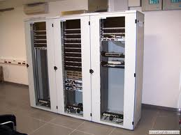

Apparato di rete
Sono dispositivi attivi, componenti di reti telematiche: il repeater connette fra loro due reti, mentre l'hub consente connessioni di più host.
L'appartenenza al livello 1 del modello ISO/OSI implica che il traffico si considera per bit, cioè per semplice sequenza di stati logici uno e zero, non raggruppati in nessun modo. Operando a livello 1, inoltre, repeater e hub non gestiscono l'arbitraggio dell'accesso al mezzo trasmissivo, e lasciano che gli host collegati lo facciano tramite l'algoritmo CSMA/CD. Quindi la connessione di un host a un hub non può che essere half-duplex. Operano nell'ambito del medesimo dominio di collisione, per cui il traffico di qualsiasi nodo, le collisioni ed i frame ritrasmessi vengono replicati su tutte le porte dell'hub, sottraendo quindi banda passante in egual misura ad ogni utenza della rete.
L'hub è un componente ormai obsoleto e viene sostituito dallo switch.
